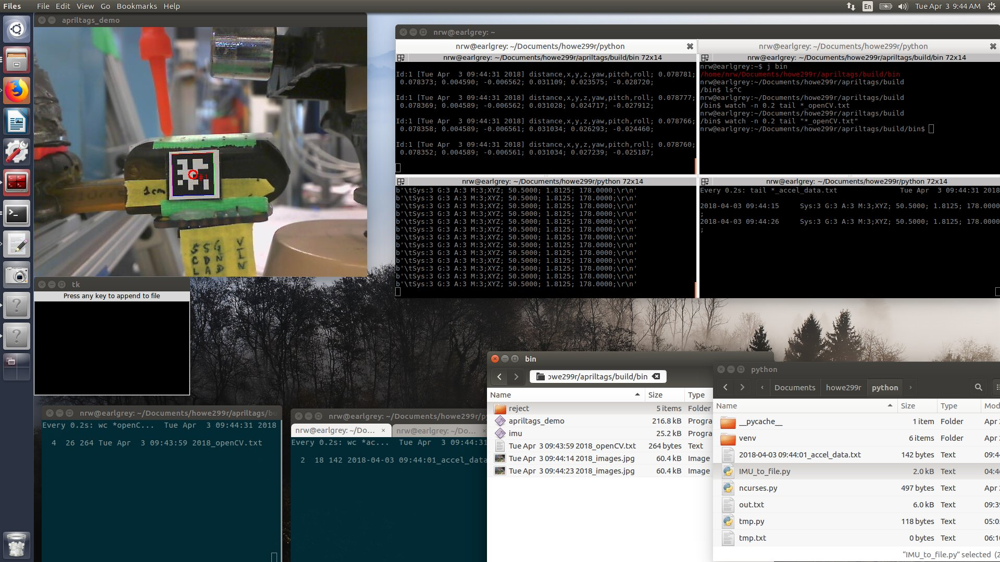
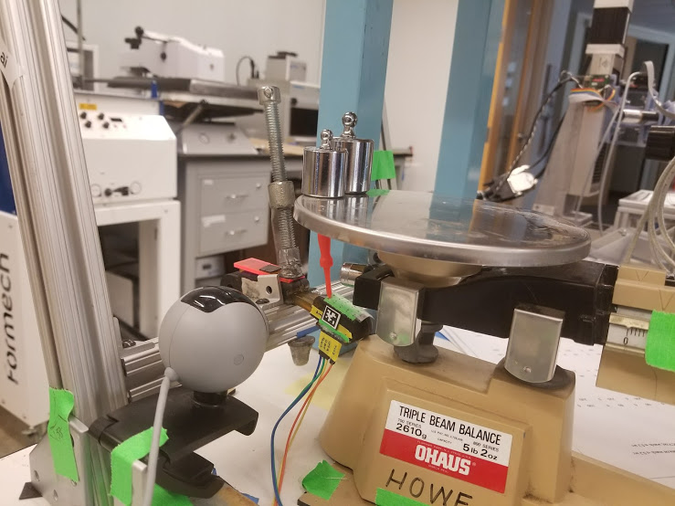

Automating the Experimental Setup

{kind=link}
This covers the parts of the data collection system that I integrated and automated.
Specifically
- Modified c code to spit out roll, pitch, yaw; continuously in CSV format over serial
- Modified openCV code to
- continuously: spit out roll, pitch, yaw to terminal (stdout)
- on keypress: write out roll, pitch, yaw in CSV format into a file
- on keypress: save image to file
- Created python code to read in c CSV data over serial
- continuously: spit out roll, pitch, yaw to terminal (stdout)
- on keypress: write data to file
I set the zero coordinates to be roughly the neutral axis on z, and centered
width wise on the finger, and at rougly where the clamp is (at the top edge
of the proximal joint).
I identified, using a ruler, the x,y distances for each point.
Note: originally, was supposed to be grid of 0.5cm spaced points.
However, I found that
- I could not place picker on center, since there was a mold parting line
- I could not place picker 5 mm from center, and had to move it in
- I also accidentally used the wrong line of points, so it is +4 mm on one side of the center
line, and -2 cm on the other side.
Arduino
On the c side, I didn’t really modify much. Adafruit had a “unified sensor library” plugin for the BNO055 9axis IMU I used (which has an onboard ARM to do the proprietary sensor fusion stuff).
At first I did tinker around, because I thought I wanted position (xyz cm) and
not orientation (roll pitch yaw degrees). It’s a bit more annoying to get the
raw accel data out, the orientation data is what BNO055 has a magic calibration
for. The accel data is what’s called “raw sensor API” data. I think you callbno.getVector instead of bno.getEvent.
imu::Vector<3> grav = bno.getVector(Adafruit_BNO055::VECTOR_GRAVITY); // !!!!
//imu::Vector<3> linaccel = bno.getVector(Adafruit_BNO055::VECTOR_LINEARACCEL); // !!!!
Serial.print(grav.x(), 4);
Reading
2014 accelerometer calibration paper was pretty cool [2]. It talked about how, by putting the IMU in various orientation, you could use the fact that there’s a constant gravity term to calibrate the IMU. I ended up not needing this because I used the BNO055 which runs calibrates for you / adafruit documents how to do this.
[2] “A robust and easy to implement method for IMU calibration without external equipments” ICRA 2014
(TODO: Also, I have no idea how the magnetometer calibrates by “waving it in a figure 8”, I’d like to learn sometime.)
EEPROM Calibration data
Oh, and to save on setup time, I run restore_offsets.ino first . The BNO055 has a bit of EEPROM.
// as written by adafruit library
EEPROM.put(eeAddress, bnoID);
eeAddress += sizeof(long);
EEPROM.put(eeAddress, newCalib);
Serial.println("Data stored to EEPROM.");
This data is read into sensorapi_bno055.ino, after which, when I ran the file only the magnetometer is not calibrated. Just lightly disturbing the finger was enough to bring M calibration from “1” to “3” and calibrate the whole system.
DEBUG TIP: I had to change my whole experimental setup, because the acceleromter refused to calibrate when the finger didn’t start out roughly parallel to the ground. Not sure why.
// as written by adafruit library
int eeAddress = 0;
long bnoID;
EEPROM.get(eeAddress, bnoID);
adafruit_bno055_offsets_t calibrationData;
sensor_t sensor;
/* Look for the sensor's unique ID at the beginning oF EEPROM. This isn't foolproof, but it's better than nothing. */
bno.getSensor(&sensor);
if (bnoID != sensor.sensor_id) {
Serial.println("\nNo Calibration Data for this sensor exists in EEPROM"); }
else {
Serial.println("\nFound Calibration for this sensor in EEPROM.");
eeAddress += sizeof(long);
EEPROM.get(eeAddress, calibrationData);
Serial.println("\n\nRestoring Calibration data to the BNO055...");
bno.setSensorOffsets(calibrationData);
}
Experimental setup
For reference, the data output format looks like this:
Data Format
displayCalStatus();
Serial.print(";");
Serial.print("XYZ; ");
Serial.print(event.orientation.x, 4);
Serial.print("; ");
Serial.print(event.orientation.y, 4);
Serial.print("; ");
Serial.print(event.orientation.z, 4);
Serial.println(";");
The calibration status is unique to the BNO sensor, it tells you from 0 to 3
how calibrated each of the mag / gryo / accel is, and gives a score for the
overall system as well.
Funny story: initially my setup used a magnet to hold the pumpkin poking tool
on to the triple beam balance (one hotglued to tool, one above the plate). I
spent a while scratching my head about how the magnetometer refused to
calibrate when I actually went to collect data, then realized I had this super
strong magnet inches from the IMU… whoops. (I modified it to just use a lot
of hot glue instead, which was REALLY ANNOYING. The triple beam balance plate
is pretty slick. I ended up roughing up the surface a tiny bit with sandpaper).
Calibration Format
def displayCalStatus():
bno.getCalibration(&system, &gyro, &accel, &mag);
Serial.print("Sys:");
Serial.print(system, DEC);
Serial.print(" G:");
Serial.print(gyro, DEC);
Serial.print(" A:");
Serial.print(accel, DEC);
Serial.print(" M:");
Serial.print(mag, DEC);
Python
I actually have no idea how my code works. But it does! I was struggling to
have the python file both continuously output the serial input to a terminal,
while also being able to catch a keystroke on occasion that would write one
datapoint (one line) to a file. I ended up needing to use tkinter to spawn a
window to catch the keystroke. The “tkinter app” lived inside a thread, I
guess, which ran asynchronously, allowing the program to proceed to the loop
where it continuously read in data and spat it out.
As per IMU_to_file.py, the libraries needed:
# 03 April 2018
# Reads in (c) serial port line by line, printing out on terminal.
# Also opens tkinter window. Pressing any key in there writes the next serial line to a file
# In the terminal, Ctrl-C twice will exit the program.
import os
import serial
import time
import tkinter as tk
import threading
from datetime import datetime
The major stuff requires simply looking at the full file.
(TODO: put link to full source code, on github, both in main “research” repo and also on the deployed blog directory)
Python code, Small tidbits
The relevant “basics” stuff I re-learned:
Get human-readable time as a string
from datetime import datetime
strtime = datetime.now().strftime('%Y-%m-%d %H:%M:%S')
Write to file
fmode = 'ab'
outf = open(fname,fmode)
outf.write(data)
outf.flush()
Also came across a neat way to avoid having to modify the file all the time, because when I power cycle the c, it’ll occasionally change the port it’s connected [1].
Serial port changes
if os.path.exists('/dev/ttyACM0'):
addr = ' dev/ttyACM0'
else:
Read from serial port
port = serial.Serial(addr,baud)
while 1:
x = port.readline()
print(x)
[1] By the way, why can’t the Arduino with its fancy GUI do something similar?
where it knows the OS and the likely ports, and if the port doesn’t exist
anymore, it’ll automatically change to the next most likely. There could be a
prompt asking the user if it’s the correct port even
C++
On the C++ side, the main things I learned were how to write out to a file (in append mode), as well as how to get the current time (in order to timestamp when I first opened the file).
C++ Development Process for Modifying AprilTag Demo
Why
I wanted to get the apriltag demo to output data that would be amenable to analysis later.
I stripped out the “ID” and “Hamming” in the print statements.
As per apriltags_demo.cpp:
/* 03 April 2018
* Edited by nrw
* Additions: Press any key to simultaneously write data to file and capture image to file
* Maintains stream of data to terminal
* Ctrl-C must now be used to exit program
*/
Quickstart version 1
edit file
cd ~/Documents/howe299r/apriltags vi example/apriltags_demo.cppCompile
bash cd ~/Documents/howe299r/apriltags makebashRun file
cd ~/Documents/howe299r/apriltags/build/bin ./apriltags_demo
Quickstart version 2
- In fact, I abstracted this into a file called
run.sh, thus the simplified dev cycle:$ j example $ vi apriltags_demo.cpp (make edits and save) $ ./run.sh
Where I had as contents of run.sh:
#!/bin/bash
APRIL_DIR="/home/nrw/Documents/howe299r/apriltags"
cd $APRIL_DIR
#make clean
make
cd $APRIL_DIR
echo $(pwd)
cd build/bin/
./apriltags_demo
Experiment Specific settings
From the openCV camera calibration I had these settings
m_width(640),
m_height(480),
m_tagSize(0.00944),
m_fx(667), // in pixels
m_fy(666), //
m_px(344), // principal point
m_py(227),
C++ code: Relevant sections modified in
In apriltags_demo.cpp
First we need some new libraries and constants
Libraries
#include <sys/time.h>
#include <iomanip>
#include <algorithm> //remove newline
#include <fstream>
using namespace std;
int flag = 0;
std::string fname = "";
Create filename
time_t now = time(0);
char* dt = ctime(&now); // get human readable current time
*std::remove(dt, dt+strlen(dt), '\n') = '\0'; //remove newline
fname += string(dt);
fname += "_openCV.txt";
Now we write to terminal, and also write out data to a file on keypress in the OpenCV window
void print_detection(AprilTags::TagDetection& detection) const {
const int TIMESTEP = 10;
time_t now = time(0);
char* dt = ctime(&now); // get human readable current time
*std::remove(dt, dt+strlen(dt), '\n') = '\0'; //remove newline
// print data to terminal, aka cout:
cout << " [" << dt << "] distance,x,y,z,yaw,pitch,roll; "
<< fixed << setprecision(6) << translation.norm()
<< "; " << translation(0)
<< "; " << translation(1)
<< "; " << translation(2)
<< "; " << yaw
<< "; " << pitch
<< "; " << roll << ";\n"
<< endl; //nrw
// ... do stuff
// write data to file, using ofstream. fname has a timestamp of when we started collecting data
// while each line (datapoint) has a timestamp as well
// waitKey(1) waits 1 (millisecond, I think)
if (cv::waitKey(1) >= 0) {
cout << "wrote to file \n"; //nrw
ofstream myfile;
myfile.open (fname.c_str(), std::ios_base::app | std::ios_base::out); //open in append mode
myfile << " [" << dt << "] distance,x,y,z,yaw,pitch,roll; " //nrw
flag = 1; //send signal to write image as well
Also I wanted the image at the timepoint, for trouble-shooting purposes
Here’s the relevant tidbits about using openCV’s library to call imwrite and write the image to a file:
void loop(){
// ... run processImage(), which runs print_detection() if a tag is detected ...
if (flag == 1){
cout << "wrote to file \n"; //nrw
time_t now = time(0);
char* dt = ctime(&now); // get human readable current time
*std::remove(dt, dt+strlen(dt), '\n') = '\0'; //remove newline
std::string imageout = string(dt);
imageout +="_images.jpg";
imwrite(imageout, image );
flag = 0;
}
Experiment Setup
Finally, I used watch and head in order to manually inspect the files in real time, and make sure that I was keeping the IMU and OpenCV data consistent, i.e. not accidentally taking two datapoints.
The Whole setup
Open an openCV window, and a TKinter window. Clicking into either window, and hitting a key, will cause data to be recorded.
nrw@earlgrey: howe299r/apriltags/build/bin$ ./apriltags_demo
nrw@earlgrey: howe299r/python$ python IMU_to_file.py
To have a sanity check, we want to peek into the files in real time. Let’s look at the number of lines in the file using wc as well as display the last few lines in the file using tail.
nrw@earlgrey: howe299r/apriltags/build/bin$ watch -n 0.2 tail "*_openCV.txt"
nrw@earlgrey: howe299r/apriltags/build/bin$ watch -n 0.2 wc "*_openCV.txt"
nrw@earlgrey: howe299r/python$ watch -n 0.2 tail "*_accel_data.txt"
nrw@earlgrey: howe299r/python$ watch -n 0.2 wc "*_accel_data.txt"
** $ watch -n 0.2 tail tailtest.txt
And finally I had file manager window open to check if the images were being
written correctly, and also allow me to manually intervene in the txt files as needed.
Make sure to click on the image below and maximize your window, if you want to be
able to see the text and what is going on:
Experimental Setup, in terms of computer
Code Robustness
I also wanted to be able to recover when I made an oopsie in the data collection (e.g. leaving the weights on when I went to take a “zero” reading.
This was significantly easier now that all data was timestamped.
- For the images – I simply used a GUI file manager to delete them.
- For the openCV data– I simply used a GUI editor to delete the lines.
- For the IMU data – my python program would refuse to write to the file anymore if I edited the file.
I worked around the fragile python file by… using a weird commmand to write to the file without “overwriting” the file. This tidbit thanks to stackoverflow (lost the link)
$ n=4
$ tac tmp.txt | sed "1,$n{d}" | tac > out.txt; cat out.txt > tmp.txt
I tried similar commands that used “> tmp.txt; mv out.txt > tmp.txt”
but i guess “cat” was the trick or something.
ShadowRanger had this to say about why:
@orangenarwhals: Your command line there is never changing the inode associated with the file name (> somefile truncates an existing somefile then writes new data, it doesn't delete said file, then create a new one). Most editors use a crash safe form of editing, where a new file is written completely, then an atomic rename operation is issued which renames the new file to the old file name (implicitly deleting the old file). But this means the inode number changes after each save operation, which means open file handles from other programs are invalidated).
The advantage to the "write new file, rename to replace old file" is that if you lose power (or blue screen, or the program just crashes) at any point prior to the rename, your original file data is intact. In no circumstance does the final file hold anything but the complete old data or the complete new data. If your computer crashed during cat out.txt > tmp.txt step or you killed it midway through processing, tmp.txt might contain partially written garbage, or nothing at all, and it might not be possible to tell if out.txt or tmp.txt was the "correct" data.
– ShadowRanger Apr 4 at 1:59
Anyway,
According to stackoverflow, I was just being very dumb after being confused by threads and such. I didn’t get to test this answer, but seems reasonable.
https://stackoverflow.com/questions/49626230/python-cannot-write-to-file-after-saved-in-another-editor/49626374
//with open('tmp.txt', 'ab') as f : // move this inside for loop to fix,
while True :
with open('tmp.txt', 'ab') as f :
f.write('this is a test\n') //just keep opening the file, i guess nothing bad happens?
f.flush()
Physical Experiment Setup

{kind=link}
TODO: this is a temporary placeholder
move these files to their own post, eventually…
{kind=link}
{kind=link}
{kind=link}
{kind=link}
{kind=link}